현재 에스프레카페는 공식적으로 36개월과 60개월 의무사용기간을 운영하는 중이다.
즉 구매 빈도가 낮고 사용 기간이 긴 제품이므로, 2030의 첫 렌탈 시점에 후보군으로 진입하는 것 자체가 중요하다.
신제품과 브랜드를 2030에게 효과적으로 알리는 것.
청호나이스를 부모님 집에서 보던 정수기에서, 내가 처음 고려하는 생활가전으로 전환하는 것.
목표 : 경쟁사의 전략과 청호나이스만의 자산을 살펴본 뒤, 2030에게 차별점을 어필할 수 있는 커뮤니케이션 전략을 수립
치열한 경쟁 속에서도 브랜드들의 카피는 여전히 기능에 치중되어 있다. 청호나이스의 카피 역시 비슷해서, 소비자 입장에서는 뾰족한 차별점을 느끼기 어렵다.
출처: 각 사 2025 공식 캠페인·제품 페이지 종합. 브랜드명은 비교 목적상 익명 처리. · 카피 재확인
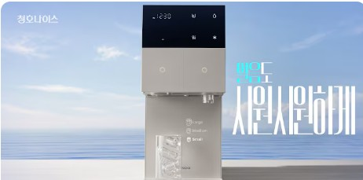
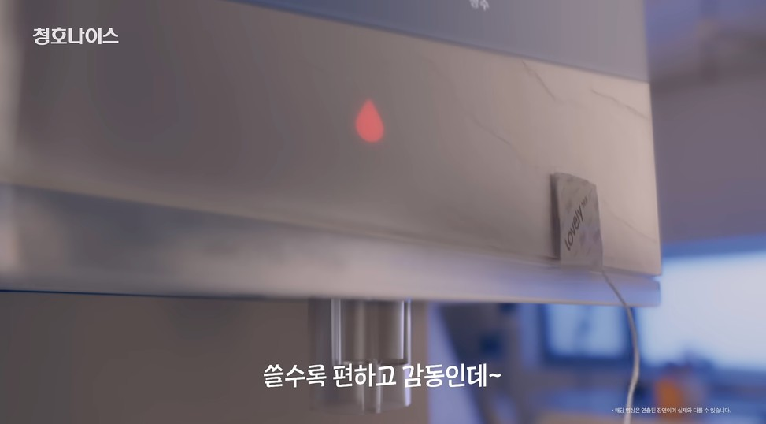
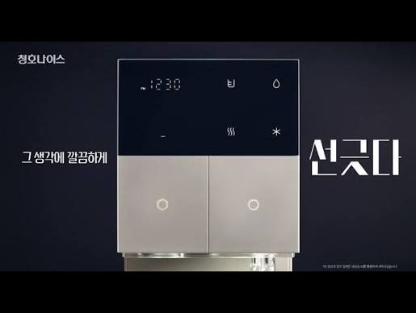
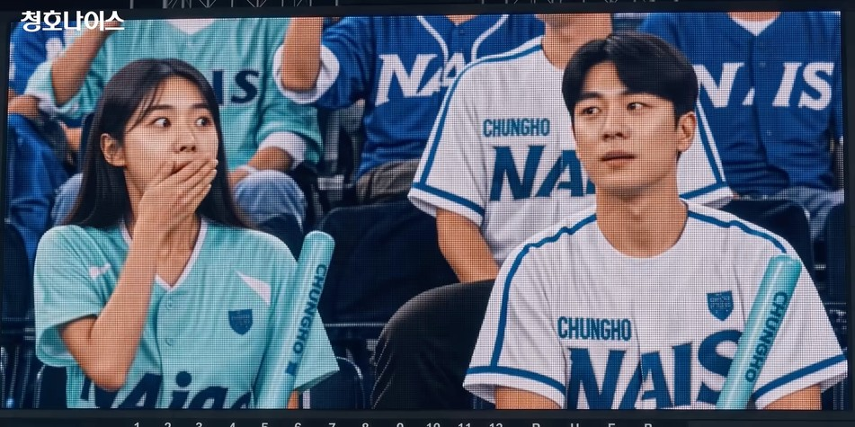
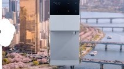
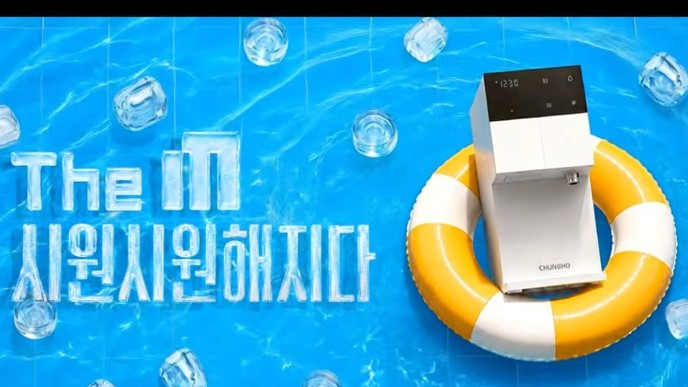
출처: 청호나이스 공식 유튜브
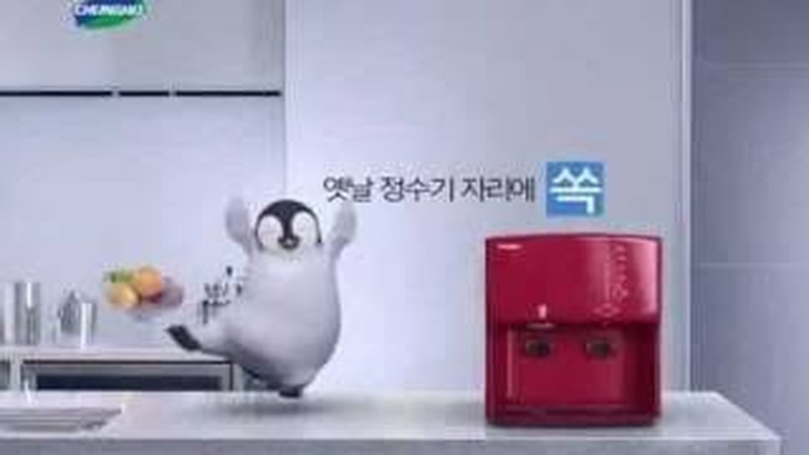
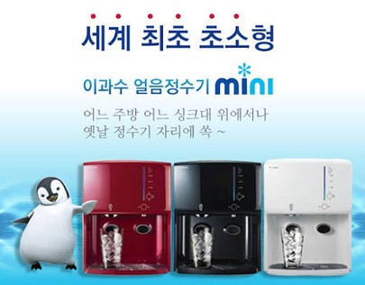
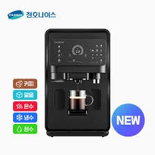
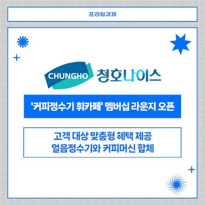
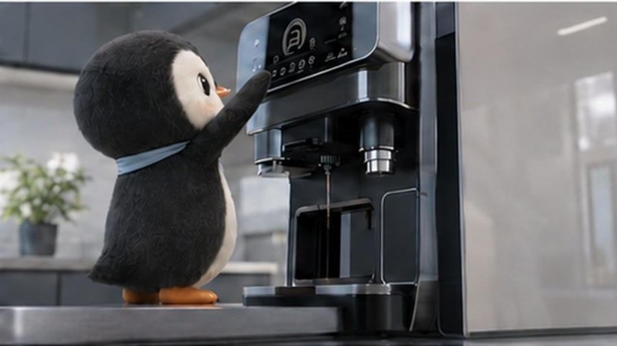
‘세계 최초’·판매량 표현은 최종 제출 전 공식 자료로 재확인. · 수치 확인
→ 새로 만들 것이 아니라, 이미 있는 것을 다시 묶는다.
2018년 363잔에서 연평균 2.8%씩 늘어 2023년 405잔. 세계 평균의 2.7배다.
유로모니터 · 2023
매일 집에서 커피를 내린다
가격이 올라 카페 소비를 줄였다
카페를 끊은 게 아니라 집으로 옮겨간 것이다. 집에서 마시는 커피가 기본이 되면, 준비 과정이 그대로 생활의 일이 된다.
딜로이트 글로벌 커피 조사 2024 · 13개국 7,000명
국내 응답만 분리한 수치는 확보 전이며, 딜로이트 수치는 글로벌 기준이다. 국내 표본 확인 예정
→ 그렇다면 집에서 마시는 사람은 누구인가.
타깃은 2030 중에서도 반복적인 소비가 큰 독립 1~2인 가구다.
‘웰니스 2030’은 너무 넓다. 세대가 아니라 반복 소비와 지불 의향으로 좁힌다.
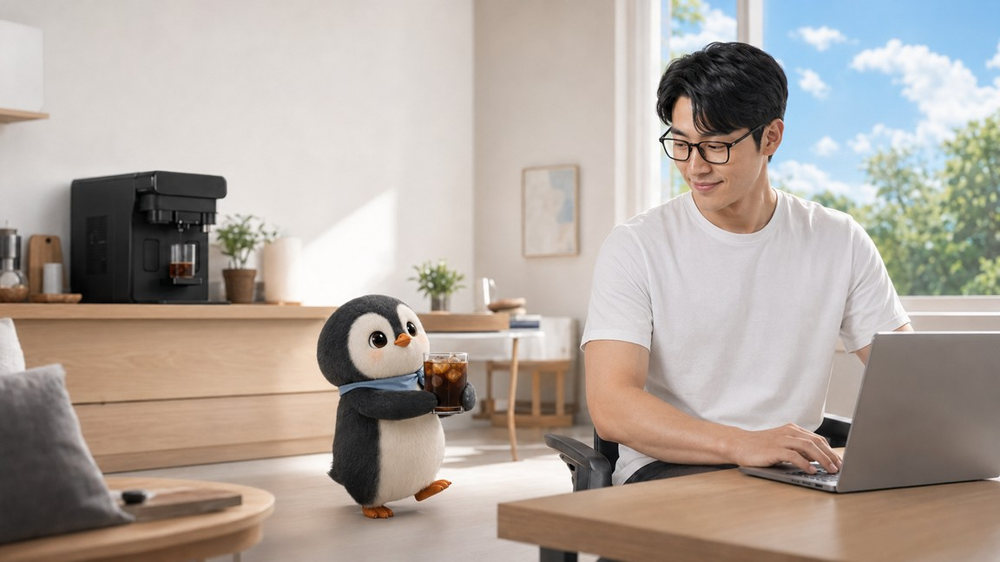
물과 커피는 하루에 여러 번 필요하다. 문제는 마시는 순간이 아니라 그때마다 다시 정해야 하는 일이다.
인터뷰 발화를 옮긴 것으로, 실제 응답으로 교체 예정. · 발화 교체
→ 이 반복이 쌓이면 매달 나가는 비용과 시간이 된다.
렌탈료를 커피값 절약만으로 회수하려면 이만큼 마셔야 한다.
저가 커피만 마시면 주 8~9잔은 되어야 한다. 매일 카페에 가는 사람이 아니면 회수가 쉽지 않다.
정수기 렌탈은 어차피 낼 돈이다. 차액만 회수하면 된다.
얼음정수기와의 렌탈료 차액이 약 5,000원. 저가 커피 기준으로도 주 1잔만 집에서 마시면 상쇄된다.
잔당 원가가 이미 비슷하다.
비용으로는 설득되지 않는다. 이들에게 파는 것은 값이 아니라 갈고 내리고 씻는 시간이다.
‘더 싸다’고 넓게 말하지 않는다. 카페를 자주 가는 사람과 정수기를 이미 고려하는 사람에게 숫자로, 드립 사용자에게는 시간으로 말한다.
렌탈료·캡슐가는 공식몰 및 판매처 기준(2026년 확인). 드립 원가와 카페 중가·프리미엄 단가는 가정치. 최종 견적으로 확정 예정
→ 그런데 돈보다 먼저 무너지는 건 따로 있다.
막상 얼리는 게 귀찮아서 홈카페를 자주 포기해요.
실제 응답으로 교체 예정
홈카페를 자주 포기하는 이유
1위 얼음 준비 · 2위 세척 · 3위 시간
지금은 숫자를 채우지 않고 조사 예정 위치만 정한다.
매일 따로 준비하던
물·얼음·커피를 하나로.
사용자가 신경 쓰기 전에, 생활의 기본을 준비하는 브랜드.
→ 그렇다면 이 역할을 2030의 머릿속에 어떻게 남길 것인가.
사물에 사람 성격을 입히면 사람들은 그 대상을 더 좋게 본다. 다만 제품의 특징과 그 성격이 맞을 때만 그렇다.
Aggarwal & McGill, Journal of Consumer Research (2007)
캐릭터를 믿게 되면 그 호감이 브랜드로 넘어간다. 그 브랜드를 잘 모르는 사람일수록 효과가 컸다. 청호나이스를 아직 모르는 2030이 여기 해당한다.
Garretson & Niedrich, Journal of Advertising (2004)
같은 캐릭터를 오래 쓰면 브랜드를 떠올리게 하는 구별 자산이 된다. 인지도와 고유성 두 축으로 관리한다.
Romaniuk, Ehrenberg-Bass. 17장 검증 설계가 이 두 축을 쓴다
조사기관 System1이 미국 슈퍼볼 광고 2020~2023년분을 분석했다. 시청자의 감정 반응을 측정해, 그 광고가 장기적으로 브랜드를 키울 가능성을 1.0~5.9점으로 환산한 점수다.
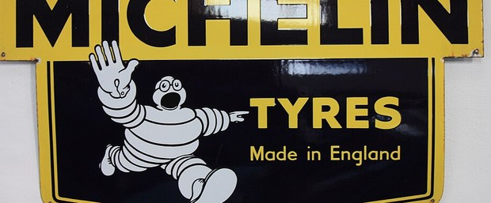
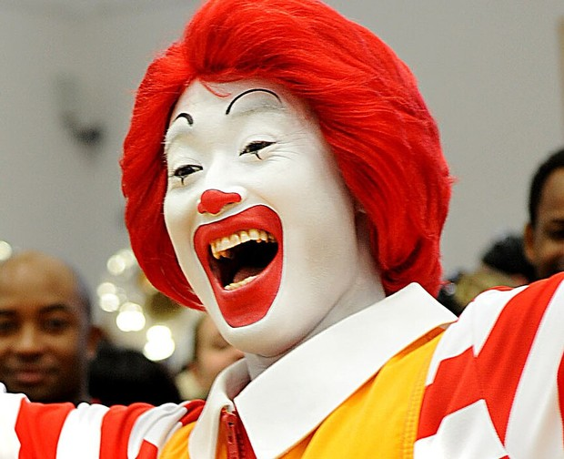
이론에서도, 실제 광고 성적에서도 같은 쪽을 가리킨다.
연예인의 주목은 빌려 쓰는 것이고, 캐릭터는 브랜드에 남는다. 정수기 광고에는 아직 그런 캐릭터가 없다.
Aggarwal & McGill(2007) · Garretson & Niedrich(2004) · Romaniuk, Ehrenberg-Bass · System1 슈퍼볼 광고 2020~2023 분석.
→ 그런데 우리는 캐릭터를 새로 만들 필요가 없다.
리트로 브랜딩 연구는 성공한 부활을 과거의 의미에 지금의 기능을 얹은 것으로 설명한다. 두꺼비가 밟은 순서가 그대로다. Brown, Kozinets & Sherry, Journal of Marketing (2003)
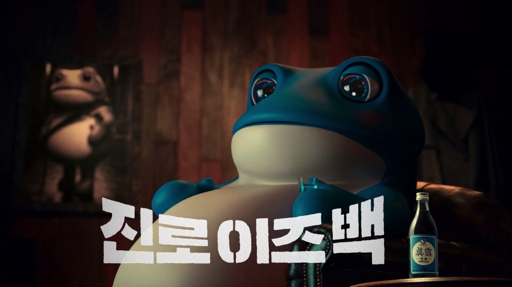
1950년대 진로 상표의 두꺼비. 1990년대 ‘골드’ 시대를 지나며 광고에서 사라졌다가, 2019년 4월 ‘진로 이즈백’으로 돌아왔다.
광고 뒷벽에 옛 두꺼비 그림이 걸려 있다. 과거를 지우지 않고 데려온 장면.
70~80년대 라벨과 캐릭터는 그대로 살리되, 말을 거는 세대를 2030으로 바꿨다.
도수를 16.9도로 낮춰 제품 자체를 젊은 층 입맛에 맞췄다. 캐릭터와 제품이 같은 말을 했다.
팝업 ‘두껍상회’·굿즈·인스타 숏폼·웹예능으로 같은 캐릭터를 반복해 쌓았다.
출시 연간 판매 목표
달성까지
4년 만의 누적 판매
(2023.4)
캐릭터샵 ‘두껍상회’
누적 방문
우리는 이렇게
적용한다
펭귄을 ‘얼음정수기 광고 캐릭터’에서 우리 집 준비 매니저로 다시 정의한다.
펭귄이 줄여주는 준비를 에스프레카페가 실제로 줄이는 일과 일치시킨다.
광고 한 편이 아니라 숏폼·계산기·팝업·굿즈·CRM에 같은 펭귄을 반복한다.
출처: 하이트진로 보도자료 및 언론 보도(누적 판매 15억 병 2023.4 기준, 두껍상회 누적 방문 45만 명), 이노션 캠페인 사례. 상세 링크는 부록.
→ 그럼 청호나이스의 어떤 자산을 되살릴 것인가.
새로 만들거나 빌리는 것보다, 청호나이스의 얼음정수기 역사와 연결할 수 있다.
인지도는 조사 전이므로 ‘보유한 과거 광고 자산 후보’로 말한다.
펭귄은 설명 없이도 떠올리게 한다.
정수·얼음·커피·세척·관리를 따로 설명하면 복잡하다.
연예인은 한 캠페인의 주목을 만들고, 마스코트는 채널마다 쌓인다.
펭귄의 핵심 효과는 친근함이 아니라, 각기 다른 콘텐츠를 하나의 브랜드 인상으로 묶는 것이다.
→ 그 펭귄을 그때 모습 그대로 쓸 수는 없다.
말보다 행동이 빠른, 우리 집 준비 매니저.
초기 리런칭은 대표 펭귄 한 마리로 시작. 캐릭터군 확장은 마스코트가 정착한 뒤 단계.
→ 다만 2030이 이 펭귄을 기억하는지는 아직 모른다.
과거의 기억보다 중요한 것은, 지금의 청호나이스를 더 잘 기억시키는가이다.
펭귄에 대한 답이 아니라, 판단 기준을 찾는다
27~34세 1~2인 가구 · 아이스커피 주 3~4회 이상 · 정수기 사용/비사용 혼합
노출 순서 생활 행동 → 제품 → 브랜드 → 과거 광고 → 현대화 펭귄
먼저 펭귄을 보여주면 우호적으로 편향된다
과거 광고가 기억되는지 숫자로 본다
비보조 회상 → 광고 보조 인지 → 청호나이스 정확 연결
본 적 있다와 브랜드를 맞혔다를 분리해 집계
광고만 기억하고 브랜드를 모르면 자산으로 보기 어렵다
현대화 펭귄이 실제로 더 나은가
A 과거 원형 · B 현대화 펭귄 · C 캐릭터 없음
1인 1안만 무작위 노출, B와 C의 차이를 본다
나란히 보여주면 취향 투표가 된다
기억이 브랜드와 제품까지 갔는가
브랜드 기억 · 제품 이해 · 관심 · 렌탈 고려 · 프리미엄 이미지
질문 4~5개 뒤에 브랜드를 되묻는다
펭귄만 남고 제품이 남지 않는 비율을 본다
펭귄의 인지도를 묻는 데서 끝나지 않고, 현대화된 펭귄이 캐릭터 없는 커뮤니케이션보다 더 나은 브랜드·제품 효과를 만드는지 검증한다.
준비까지 열심히 살 필요는 없으니까.
펭귄이 2030의 일상에서 반복되는 준비를 발견하고, 청호나이스의 제품 기능으로 하나씩 줄여주는 캠페인.
각 단계에서 펭귄이 맡는 역할이 달라진다. 관계 단계의 씨앗은 이미 휘카페 멤버십 라운지에 있다. MY NICE ROUTINE 앱은 이 단계에서만 짧게 언급하고 상세는 부록으로.
출근·재택·운동 후·주말 홈카페 상황의 10~15초 숏폼
사연과 댓글에 건조하게 답한다. “아직 절반만 홈카페입니다.”
생수·커피·얼음 구매 횟수와 시간을 넣으면 월간 준비 행동을 보여주고 상담으로 연결
실제 피드·릴스·랜딩 목업으로 교체. 설명문보다 목업이 화면의 70% 이상을 차지하도록 구성.
펭귄 포토존과 굿즈는 동선 끝에 둔다. 캐릭터를 보러 와서 제품을 써보고 나가게 만드는 구조다.
근거: 2025 팝업 3,077개, 성수 35.38% 집중, 8~14일 운영이 최고 효율. · 수치 확인
가설을 여섯 개 나열하지 않는다. 브랜드 연결에서 관계까지 하나의 퍼널로 본다.
사전 조사, 광고 노출자·비노출자 비교, 캠페인 후 조사를 같은 항목으로 설계한다.
부모님 집의 정수기에서, 나의 첫 생활가전으로.